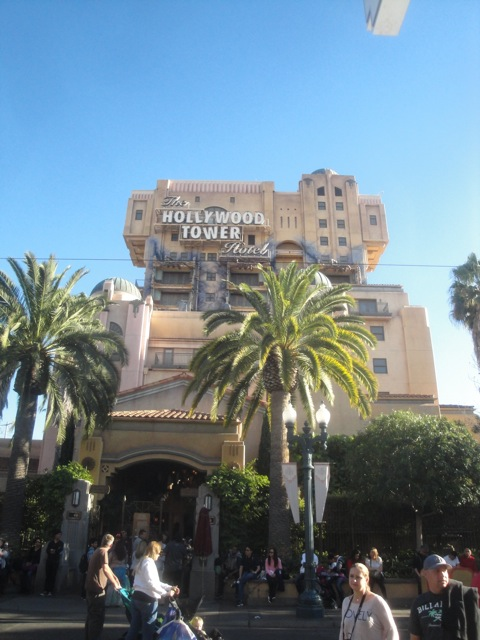
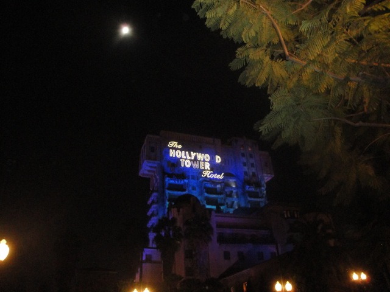
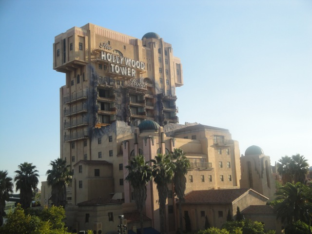
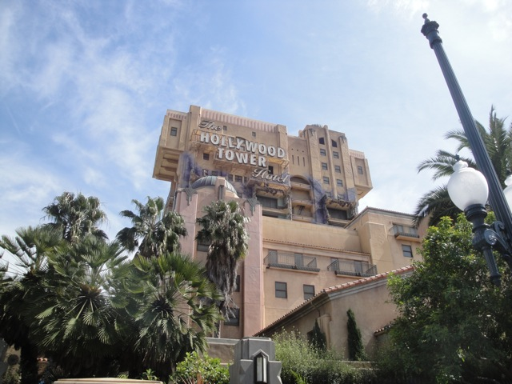
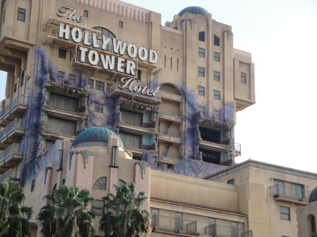
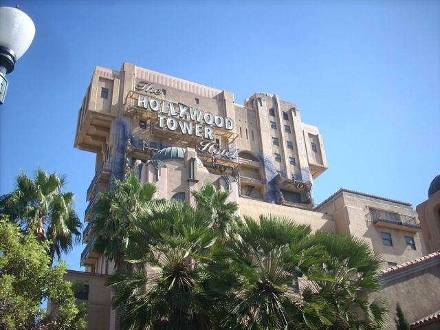
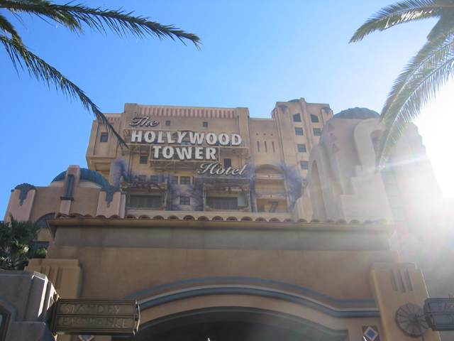
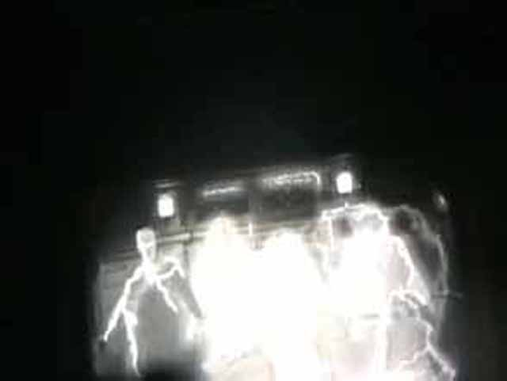
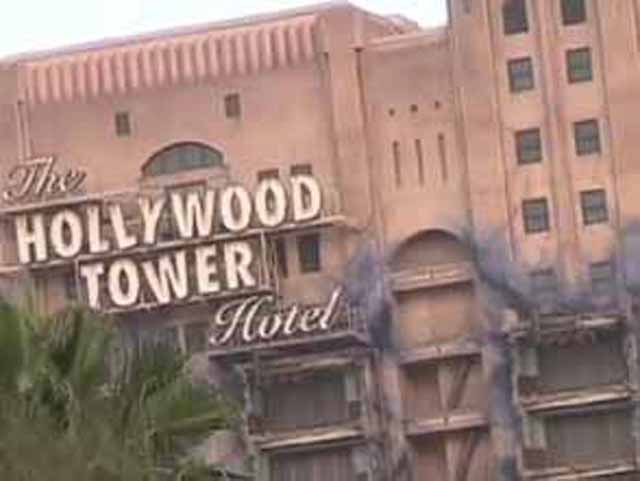
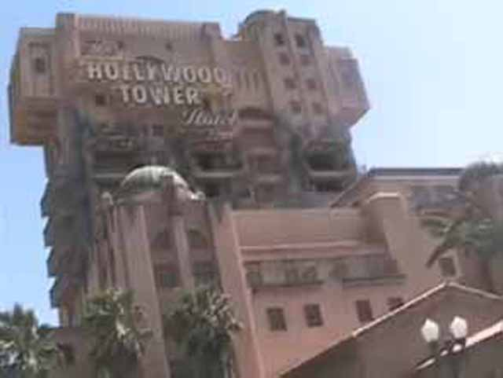

| |
Guardians of the Galaxy: Mission Breakout Review

We're here at Disneys California Adventure where we'll reveiwing Guardians of the Galaxy. Disneyland's Official Drop Tower. Now this ride used to be Tower of Terror (still avaliable at Disneyland Paris), but Disney decided to redo it as Guardians of the Galaxy. And while I do prefer the Twilight Zone over Guardians of the Galaxy, this is a better overall drop tower. We get in line and go into the Collector's archieve. It looks very nice as you would expect. Then a cast member will assign you into the Collector's office. There, you will see Rocket break into the room and explain the plan for rescuing his friends. You're able to get in since your hands are coded. All you have to do is raise your hands so they can be scanned, and you're in. Then when the doors open, you get a glance at the exit hallway where you will exit after the ride. But for now, let's focus on the ride. Once you fasten, your seatbelt, the elevator moves back to the shaft, Rocket unplugs the system and just plays Quill's walkman instead (It's the 21st Century dude. What the f*ck are you still doing with a Walkman!? Use your phone like a normal person!). Then you go through the ride. Now there are six different versions of the ride. All with six different songs playing. "Hit Me with your Best Shot" by Pat Benetar, "Give Up the Funk" by Parliment, "Born to Be Wild" by Steppenwolf, "I Want You Back" by the Jackson 5, "Burning Love" by Elvis Presley, and "Free Ride" by The Edgar Winter Group. Now the majority of the versions of the ride are pretty similar to the original. A drop sequence similar to all the others. You see the Guardians of the Galaxy in these random positions throughtout the ride, particuarly seeing them being held hostage by a tentacled monster. The only one that's really different is the Edgar Winter Group version, which has Groot turn off the artificial gravity, so it launches up like a space shot. I love that they have a Space Shot program now. And then they turn the gravity back on, and everything just starts to fall, including the elevator, and you just see them floating around. So yeah. The original had the better theme, but Guardians of the Galaxy unquestionably has the better drop tower program. I mean, they randomized it like in Florida. And I really appreciate that. So yeah. Florida Tower of Terror is still the best and better than both Tower of Terror and Guardians of the Galaxy. But hey. Still a great ride.
8/10
Location: Disneyland Resort
Opened as Tower of Terror in 2004
Remade into Guardians of the Galaxy in 2017
Built by: Disney
Last Ridden: December 17, 2017
Guardians of the Galaxy: Mission Breakout Photos
Tower of Terror Photos





















Home
|